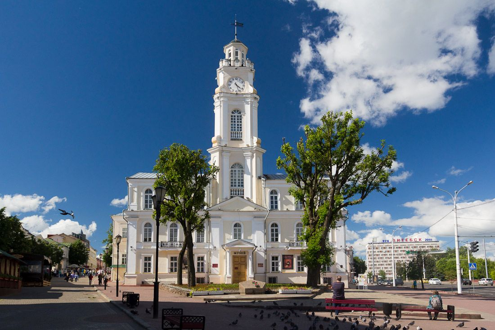
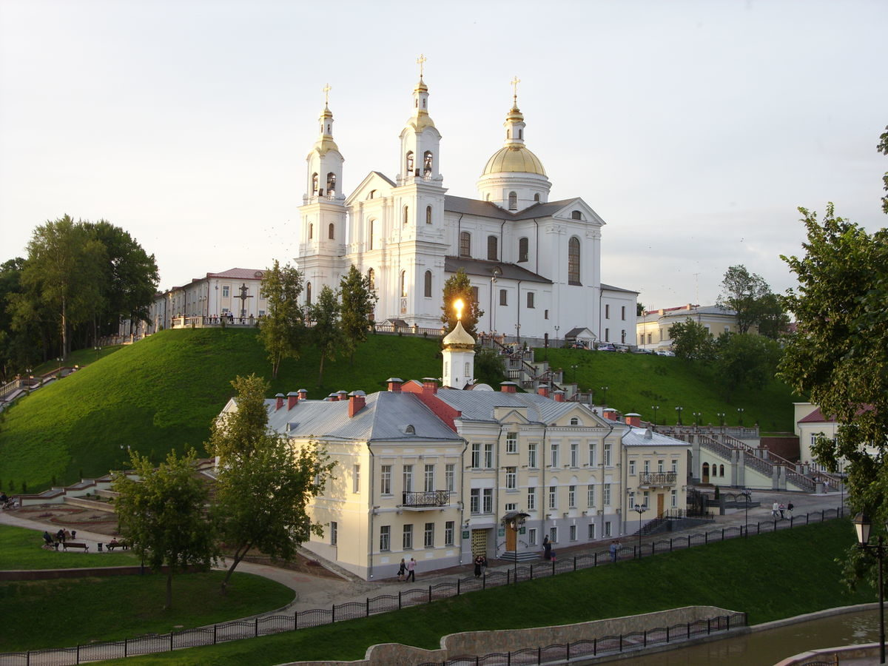
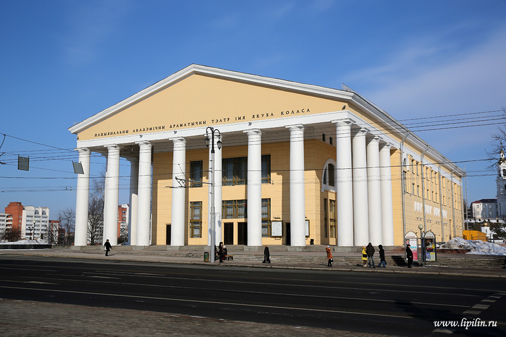

В начале улицы Суворова стоит городская ратуша 18 века. Светлое здание с
элементами барокко и классицизма возвели в 1775 году на месте прежней
деревянной ратуши, построенной в 1597 году и разрушенной в 1623 году
после отмены Магдебургского права.
Сейчас это областной краеведческий музей и визитная карточка города, которую не пропускает ни один экскурсовод.

Ратуша
Успенский собор
В центре Старого города Витебска возвышается Успенский собор, построенный в начале 21 века в стиле виленского
барокко по образцу римского храма Сан-Карло-аль-Корсо. Он стоит на одноименной горе, Успенской, самой высокой в городе, поэтому его видно издалека

Свято-Успенский кафедральный собор
Национальный драммтеатр
На площади Тысячелетия Витебска находится Национальный драмтеатр. Его открыли 21 ноября 1926 года и назвали в
честь писателя, общественного деятеля и переводчика Якуба Коласа. Театр располагается в классицистическом здании
с фронтоном и колоннами, построенном в 1958 году. В репертуаре драмтеатра — постановки для взрослых и детей,
классические и современные спектакли по произведениям белорусских и зарубежных авторов.

Национальный академический драматический
театр имени Якуба Коласа
В Витебске много кафе, ресторанов и закусочных. Почти в каждом заведении вы найдете национальные блюда из картошки,
свинины, капусты, свеклы. Попробуйте шурпу мотольскую родом из Витебской области. Это густой суп из мяса, в котором даже
ложка стоит. Шурпу готовят из сердца, почек, легкого и печени, которые поэтапно варят, а потом к ним добавляют пассерованные
овощи. Еще здесь готовят гульбишники, или бульбишники — запеканку из творога и картофеля. Картофельное пюре перемешивают с мукой,
яйцами, творогом, сметаной, укропом, луком и запекают в духовке. Зайдите в магазины «Витебские продукты» или «Веста», чтобы купить
местные продукты — например, знаменитую сгущенку Глубокского молочноконсервного комбината, который находится в Витебской области.
В Витебске можно попробовать традиционные белорусские алкогольные напитки: зубровку, крамбамбулю, крупник, разные виды бальзамов и квас.
В Витебске можно купить качественную обувь, сумки и аксессуары из кожи. Если ищете себе обновки, стоит заглянуть в магазины
местных марок «Марко» и «Белвест».Беларусь славится льном, его еще называют «северный шелк». В Витебской области находится
Оршанский льнокомбинат — самый крупный в стране и в Европе. Отличным подарком станут вещи из льна: например, одежда, сумки,
постельное белье, скатерти и полотенца. В Беларуси отличное качество трикотажа: майки, носки, колготки и нижнее белье приятны
к телу и долго носятся. Хотите купить что-то в подарок? Ищите в Витебске торговые точки Брестского чулочного комбината, где в
консервных банках продаются «беларускiя шкарпэткi» — носки с национальной вышивкой. Изделия из соломы — часть национальной культуры
Беларуси. Привезите домой интересную вещицу из соломы: куклу-оберег, шкатулку, шляпу, картину или что-то другое. На память о поездке
в Витебск также можно купить местные вафли «Витьба» и конфеты «Беловежская пуща», травяные чаи, магниты, книги и газеты на белорусском
языке, статуэтки и посуду из дерева.